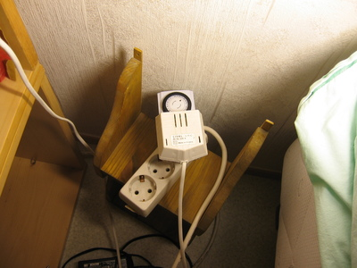
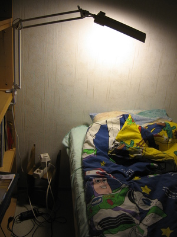

Naapuriongelmat ratkaistu
Tässä talossa on tosiaankin ohuet seinämät. Naapurit ovat ihan mukavia, eivätkä riehu. Mutta se ei riitä, kun kaikki kohtuullinen eläminen kuuluu kaikkinensa liian hyvin seinien kautta. Ajattelin, että kuukausi tai kaksi riittäisi totuttelemaan meluihin, mutta ei siihen ikinä tottunut.
Keksin sitten unohduksissa olleet korvanappini, eli tulpat. Niillä tosiaan häviää kaikki ääni ja unikin tulee mitä mainioiten. Elämänlaatu parani syventyneiden unien ansiosta heti useita prosentteja. Päivisin musiikkia kuulokkeilla, öisin tulppia korvissa. Parempi kuin se valkoisen kohinan laite.
Heräämisen kanssa voi olla hieman ongelmia: miten kuulla herätyskello kaiken tulppauksen jälkeen, kun vielä unikin on sitkeästi kiinni. Valopohjaiset herättimet maksavat huomattavan paljon, mutta keksin sitten lopulta siihenkin jotain: heitetään tavallinen ajastinratkaisu hitaasti syttyvän ESL-valon perään. Tulee yllättävän hyvää jälkeä näin.


No joo, laitoin lukuvalona toimivan loisteputken siihen perään, toimii ihan yhtä hyvin. Erityisesti kun rasiassa on se ajastimen ohituksen mahdollistava vipu. Enää pitää muistaa jättää valo päälle kun menee nukkumaan.
Lämpöongelma
Lämpöongelma on enää tässä talossa päällimmäisenä murheena. Länteen laskeva aurinko paahtaa noin kymmeneen asti illalla kilowattitolkulla hellettä ikkunoistani sisään, ja ensimmäinen kunnollinen heijastaja on seinän väärällä puolella. Haittaa toki myös elokuvia, ja juhannuksen lähestyessä varmasti aikaisia nukkumaanmenojakin.
No, kävin noita kodinlaiteliikkeitä läpi eilen. Joensuun Gigantissa eivät olleet vastaanottavaisella päällä: pahvit menevät toki puristimeen oitis. Kuulema tavaran vastaanottopäivinä olisi saumaa, mutta eivät kertoneet, milloin sellaisia on luvassa. Gigantin naapurissa oli Expert, jossa sitten oli samanlainen tilanne, mutta sielläpä erittäin ystävällinen henkilökunta lupasi laittaa syrjään joitain pahveja, jos tulen myöhemmin viikolla käymään. Jees!